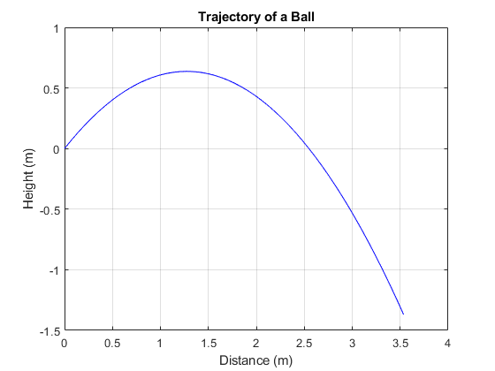
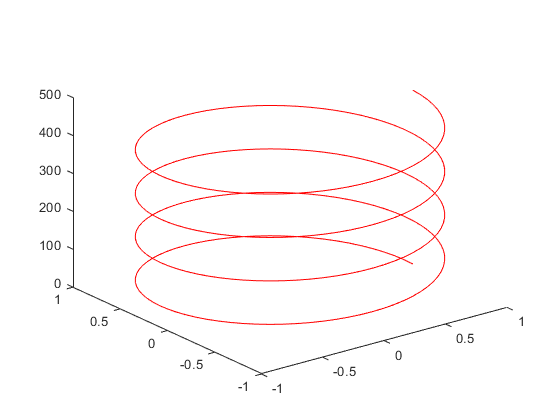
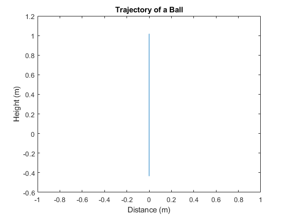
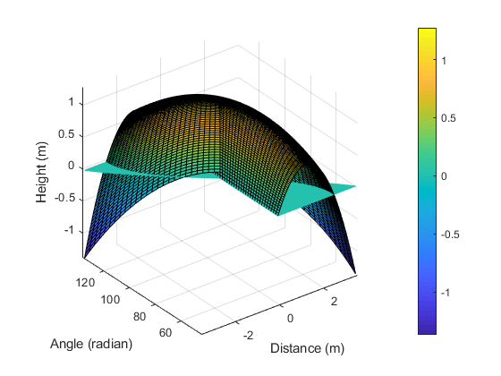
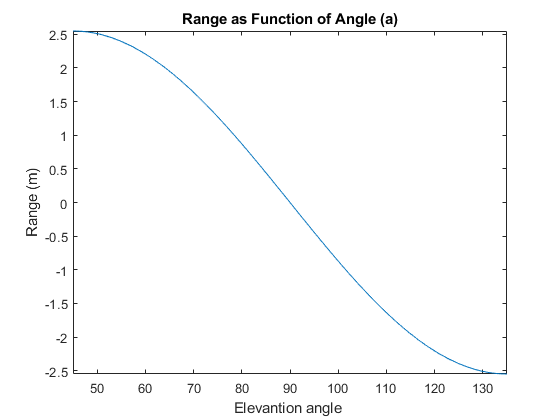
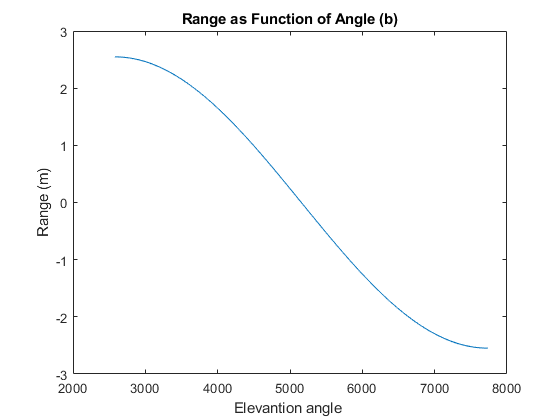

Contents
- Calculates the position of a ball at t = 1 sec, given the initial velocity of the ball.
- Calculates the positions of the ball described in the last section at t = 0, 0.2, 0.4, 0.6, 0.8, and 1.0 seconds.
- Plots a trajectory curve of the ball described before.
- Plots a spiral curve described by the equations x =cos(θ), y=sin(θ), and z =θ 8π, where θ runs from 0 to 8π.
- Runs the commands in the last section as a script file.
- Plots the trajectory curves of the ball for elevation angles θ varying from π 8to 3π 8. The collection of the curves form a surface in the height-distance-θ space.
- Derives an expression for the range of the ball as a function of the elevation angle θand plots a range-versus-θcurve. (a)
- Derives an expression for the range of the ball as a function of the elevation angle θand plots a range-versus-θcurve. (b)
- Calculates and tabulates the positions of the ball at t = 0, 0.1, 0.2, ... , 1 sec, allowing the input of an initial speed and an elevation angle.
- Creates a trajectory table, write the table to a text file, reads the table from the text file, and prints the table on the screen.
Calculates the position of a ball at t = 1 sec, given the initial velocity of the ball.
v0 = 5;
theta = 45;
g = 9.81;
t = 1;
x = v0*cosd(theta)*t;
y = v0*sind(theta)*t-g*t^2/2;
Calculates the positions of the ball described in the last section at t = 0, 0.2, 0.4, 0.6, 0.8, and 1.0 seconds.
v0 = 5;
theta = 45;
g = 9.81;
t = 0:0.2:1
x= v0*cosd(theta)*t
y= v0*sind(theta)*t-g*t.^2/2
t =
0 0.2000 0.4000 0.6000 0.8000 1.0000
x =
0 0.7071 1.4142 2.1213 2.8284 3.5355
y =
0 0.5109 0.6294 0.3555 -0.3108 -1.3695
Plots a trajectory curve of the ball described before.
v0 = 5; theta = 45; g = 9.81;
t = 0:0.02:1
x= v0*cosd(theta)*t
y= v0*sind(theta)*t-g*t.^2/2
plot(x,y,'b'); grid;
title('Trajectory of a Ball')
xlabel('Distance (m)')
ylabel('Height (m)')
t =
Columns 1 through 7
0 0.0200 0.0400 0.0600 0.0800 0.1000 0.1200
Columns 8 through 14
0.1400 0.1600 0.1800 0.2000 0.2200 0.2400 0.2600
Columns 15 through 21
0.2800 0.3000 0.3200 0.3400 0.3600 0.3800 0.4000
Columns 22 through 28
0.4200 0.4400 0.4600 0.4800 0.5000 0.5200 0.5400
Columns 29 through 35
0.5600 0.5800 0.6000 0.6200 0.6400 0.6600 0.6800
Columns 36 through 42
0.7000 0.7200 0.7400 0.7600 0.7800 0.8000 0.8200
Columns 43 through 49
0.8400 0.8600 0.8800 0.9000 0.9200 0.9400 0.9600
Columns 50 through 51
0.9800 1.0000
x =
Columns 1 through 7
0 0.0707 0.1414 0.2121 0.2828 0.3536 0.4243
Columns 8 through 14
0.4950 0.5657 0.6364 0.7071 0.7778 0.8485 0.9192
Columns 15 through 21
0.9899 1.0607 1.1314 1.2021 1.2728 1.3435 1.4142
Columns 22 through 28
1.4849 1.5556 1.6263 1.6971 1.7678 1.8385 1.9092
Columns 29 through 35
1.9799 2.0506 2.1213 2.1920 2.2627 2.3335 2.4042
Columns 36 through 42
2.4749 2.5456 2.6163 2.6870 2.7577 2.8284 2.8991
Columns 43 through 49
2.9698 3.0406 3.1113 3.1820 3.2527 3.3234 3.3941
Columns 50 through 51
3.4648 3.5355
y =
Columns 1 through 7
0 0.0687 0.1336 0.1945 0.2515 0.3045 0.3536
Columns 8 through 14
0.3988 0.4401 0.4775 0.5109 0.5404 0.5660 0.5877
Columns 15 through 21
0.6054 0.6192 0.6291 0.6351 0.6371 0.6352 0.6294
Columns 22 through 28
0.6197 0.6060 0.5884 0.5669 0.5415 0.5122 0.4789
Columns 29 through 35
0.4417 0.4006 0.3555 0.3065 0.2537 0.1968 0.1361
Columns 36 through 42
0.0714 0.0028 -0.0697 -0.1461 -0.2265 -0.3108 -0.3990
Columns 43 through 49
-0.4911 -0.5872 -0.6872 -0.7911 -0.8989 -1.0107 -1.1263
Columns 50 through 51
-1.2459 -1.3695

Plots a spiral curve described by the equations x =cos(θ), y=sin(θ), and z =θ 8π, where θ runs from 0 to 8π.
theta = 0:5:360*4;
x= cosd(theta)
y= sind(theta);
z = theta/(pi);
plot3(x,y,z,'r')
x =
Columns 1 through 7
1.0000 0.9962 0.9848 0.9659 0.9397 0.9063 0.8660
Columns 8 through 14
0.8192 0.7660 0.7071 0.6428 0.5736 0.5000 0.4226
Columns 15 through 21
0.3420 0.2588 0.1736 0.0872 0 -0.0872 -0.1736
Columns 22 through 28
-0.2588 -0.3420 -0.4226 -0.5000 -0.5736 -0.6428 -0.7071
Columns 29 through 35
-0.7660 -0.8192 -0.8660 -0.9063 -0.9397 -0.9659 -0.9848
Columns 36 through 42
-0.9962 -1.0000 -0.9962 -0.9848 -0.9659 -0.9397 -0.9063
Columns 43 through 49
-0.8660 -0.8192 -0.7660 -0.7071 -0.6428 -0.5736 -0.5000
Columns 50 through 56
-0.4226 -0.3420 -0.2588 -0.1736 -0.0872 0 0.0872
Columns 57 through 63
0.1736 0.2588 0.3420 0.4226 0.5000 0.5736 0.6428
Columns 64 through 70
0.7071 0.7660 0.8192 0.8660 0.9063 0.9397 0.9659
Columns 71 through 77
0.9848 0.9962 1.0000 0.9962 0.9848 0.9659 0.9397
Columns 78 through 84
0.9063 0.8660 0.8192 0.7660 0.7071 0.6428 0.5736
Columns 85 through 91
0.5000 0.4226 0.3420 0.2588 0.1736 0.0872 0
Columns 92 through 98
-0.0872 -0.1736 -0.2588 -0.3420 -0.4226 -0.5000 -0.5736
Columns 99 through 105
-0.6428 -0.7071 -0.7660 -0.8192 -0.8660 -0.9063 -0.9397
Columns 106 through 112
-0.9659 -0.9848 -0.9962 -1.0000 -0.9962 -0.9848 -0.9659
Columns 113 through 119
-0.9397 -0.9063 -0.8660 -0.8192 -0.7660 -0.7071 -0.6428
Columns 120 through 126
-0.5736 -0.5000 -0.4226 -0.3420 -0.2588 -0.1736 -0.0872
Columns 127 through 133
0 0.0872 0.1736 0.2588 0.3420 0.4226 0.5000
Columns 134 through 140
0.5736 0.6428 0.7071 0.7660 0.8192 0.8660 0.9063
Columns 141 through 147
0.9397 0.9659 0.9848 0.9962 1.0000 0.9962 0.9848
Columns 148 through 154
0.9659 0.9397 0.9063 0.8660 0.8192 0.7660 0.7071
Columns 155 through 161
0.6428 0.5736 0.5000 0.4226 0.3420 0.2588 0.1736
Columns 162 through 168
0.0872 0 -0.0872 -0.1736 -0.2588 -0.3420 -0.4226
Columns 169 through 175
-0.5000 -0.5736 -0.6428 -0.7071 -0.7660 -0.8192 -0.8660
Columns 176 through 182
-0.9063 -0.9397 -0.9659 -0.9848 -0.9962 -1.0000 -0.9962
Columns 183 through 189
-0.9848 -0.9659 -0.9397 -0.9063 -0.8660 -0.8192 -0.7660
Columns 190 through 196
-0.7071 -0.6428 -0.5736 -0.5000 -0.4226 -0.3420 -0.2588
Columns 197 through 203
-0.1736 -0.0872 0 0.0872 0.1736 0.2588 0.3420
Columns 204 through 210
0.4226 0.5000 0.5736 0.6428 0.7071 0.7660 0.8192
Columns 211 through 217
0.8660 0.9063 0.9397 0.9659 0.9848 0.9962 1.0000
Columns 218 through 224
0.9962 0.9848 0.9659 0.9397 0.9063 0.8660 0.8192
Columns 225 through 231
0.7660 0.7071 0.6428 0.5736 0.5000 0.4226 0.3420
Columns 232 through 238
0.2588 0.1736 0.0872 0 -0.0872 -0.1736 -0.2588
Columns 239 through 245
-0.3420 -0.4226 -0.5000 -0.5736 -0.6428 -0.7071 -0.7660
Columns 246 through 252
-0.8192 -0.8660 -0.9063 -0.9397 -0.9659 -0.9848 -0.9962
Columns 253 through 259
-1.0000 -0.9962 -0.9848 -0.9659 -0.9397 -0.9063 -0.8660
Columns 260 through 266
-0.8192 -0.7660 -0.7071 -0.6428 -0.5736 -0.5000 -0.4226
Columns 267 through 273
-0.3420 -0.2588 -0.1736 -0.0872 0 0.0872 0.1736
Columns 274 through 280
0.2588 0.3420 0.4226 0.5000 0.5736 0.6428 0.7071
Columns 281 through 287
0.7660 0.8192 0.8660 0.9063 0.9397 0.9659 0.9848
Columns 288 through 289
0.9962 1.0000

Runs the commands in the last section as a script file.
v0=5; theta = 360/4; g =9.81
t = 0:0.02:1
x = v0*cosd(theta)*t;
y = v0*sin(theta)*t-g*t.^2/2;
disp(x)
disp(y)
plot(x,y)
title('Trajectory of a Ball')
xlabel('Distance (m)')
ylabel('Height (m)')
g =
9.8100
t =
Columns 1 through 7
0 0.0200 0.0400 0.0600 0.0800 0.1000 0.1200
Columns 8 through 14
0.1400 0.1600 0.1800 0.2000 0.2200 0.2400 0.2600
Columns 15 through 21
0.2800 0.3000 0.3200 0.3400 0.3600 0.3800 0.4000
Columns 22 through 28
0.4200 0.4400 0.4600 0.4800 0.5000 0.5200 0.5400
Columns 29 through 35
0.5600 0.5800 0.6000 0.6200 0.6400 0.6600 0.6800
Columns 36 through 42
0.7000 0.7200 0.7400 0.7600 0.7800 0.8000 0.8200
Columns 43 through 49
0.8400 0.8600 0.8800 0.9000 0.9200 0.9400 0.9600
Columns 50 through 51
0.9800 1.0000
Columns 1 through 13
0 0 0 0 0 0 0 0 0 0 0 0 0
Columns 14 through 26
0 0 0 0 0 0 0 0 0 0 0 0 0
Columns 27 through 39
0 0 0 0 0 0 0 0 0 0 0 0 0
Columns 40 through 51
0 0 0 0 0 0 0 0 0 0 0 0
Columns 1 through 7
0 0.0874 0.1710 0.2505 0.3262 0.3979 0.4658
Columns 8 through 14
0.5297 0.5896 0.6457 0.6978 0.7460 0.7903 0.8306
Columns 15 through 21
0.8670 0.8995 0.9281 0.9528 0.9735 0.9903 1.0032
Columns 22 through 28
1.0122 1.0172 1.0183 1.0155 1.0087 0.9981 0.9835
Columns 29 through 35
0.9650 0.9425 0.9162 0.8859 0.8517 0.8136 0.7715
Columns 36 through 42
0.7255 0.6756 0.6218 0.5641 0.5024 0.4368 0.3673
Columns 43 through 49
0.2938 0.2164 0.1352 0.0499 -0.0392 -0.1323 -0.2293
Columns 50 through 51
-0.3302 -0.4350

Plots the trajectory curves of the ball for elevation angles θ varying from π 8to 3π 8. The collection of the curves form a surface in the height-distance-θ space.
v0=5; g =9.81;
time = 0:0.01:1; n = length(time);
theta = 45:1.8:135
m = length(theta);
time_arr = repmat(time,m,1);
theta_arr = repmat(theta',1,n);
X = v0*cosd(theta_arr).*time_arr;
Z = v0*sind(theta_arr).*time_arr-g*time_arr.^2/2;
surf(X,theta_arr,Z)
hold on
Z = zeros(m,n);
mesh(X,theta_arr,Z)
xlabel('Distance (m)')
ylabel('Angle (radian)')
zlabel('Height (m)')
colorbar
axis vis3d
theta =
Columns 1 through 7
45.0000 46.8000 48.6000 50.4000 52.2000 54.0000 55.8000
Columns 8 through 14
57.6000 59.4000 61.2000 63.0000 64.8000 66.6000 68.4000
Columns 15 through 21
70.2000 72.0000 73.8000 75.6000 77.4000 79.2000 81.0000
Columns 22 through 28
82.8000 84.6000 86.4000 88.2000 90.0000 91.8000 93.6000
Columns 29 through 35
95.4000 97.2000 99.0000 100.8000 102.6000 104.4000 106.2000
Columns 36 through 42
108.0000 109.8000 111.6000 113.4000 115.2000 117.0000 118.8000
Columns 43 through 49
120.6000 122.4000 124.2000 126.0000 127.8000 129.6000 131.4000
Columns 50 through 51
133.2000 135.0000

Derives an expression for the range of the ball as a function of the elevation angle θand plots a range-versus-θcurve. (a)
clc
clear all
close all
syms v0 theta g t
x = v0*cosd(theta)*t
y = v0*sind(theta)*t-g*t^2/2
solutions = solve(y,t)
t0 = solutions(2)
range = subs(x,t,t0)
range = simplify(range)
range = subs(range,[v0,g],[5,9.81]);
fplot(range,[360/8,360*3/8])
title('Range as Function of Angle (a)')
xlabel('Elevantion angle ')
ylabel('Range (m)')
x =
t*v0*cos((pi*theta)/180)
y =
t*v0*sin((pi*theta)/180) - (g*t^2)/2
solutions =
0
(2*v0*sin((pi*theta)/180))/g
t0 =
(2*v0*sin((pi*theta)/180))/g
range =
(2*v0^2*cos((pi*theta)/180)*sin((pi*theta)/180))/g
range =
(v0^2*sin((pi*theta)/90))/g

Derives an expression for the range of the ball as a function of the elevation angle θand plots a range-versus-θcurve. (b)
clc
clear all
close all
syms v0 theta g t
x = v0*cosd(theta)*t
y = v0*sind(theta)*t-g*t^2/2
solutions = solve(y,t)
t0 = solutions(2)
range = subs(x,t,t0)
range = simplify(range)
range = subs(range,[v0,g],[5,9.81])
func = matlabFunction(range)
theta = [360/8:360/200:360*(3/8)];
range = func(theta);
plot(theta*180/pi,range)
title('Range as Function of Angle (b)')
xlabel('Elevantion angle ')
ylabel('Range (m)')
x =
t*v0*cos((pi*theta)/180)
y =
t*v0*sin((pi*theta)/180) - (g*t^2)/2
solutions =
0
(2*v0*sin((pi*theta)/180))/g
t0 =
(2*v0*sin((pi*theta)/180))/g
range =
(2*v0^2*cos((pi*theta)/180)*sin((pi*theta)/180))/g
range =
(v0^2*sin((pi*theta)/90))/g
range =
(2500*sin((pi*theta)/90))/981
func =
function_handle with value:
@(theta)sin(theta.*pi.*(1.0./9.0e1)).*2.54841997961264

Calculates and tabulates the positions of the ball at t = 0, 0.1, 0.2, ... , 1 sec, allowing the input of an initial speed and an elevation angle.
disp('Enter initial speed (m/s): ');
v0 = 5
disp('Enter elevation angle: ');
theta = 45
g = 9.81; t = 0:0.1:1;
x = v0*cosd(theta)*t;
y = v0*sind(theta)*t-g*t.^2/2;
Table = [t',x',y'];
fprintf('\n time (s) x (m) y (m)\n')
fprintf('%10.1f %9.3f %9.3f\n',Table')
Enter initial speed (m/s):
v0 =
5
Enter elevation angle:
theta =
45
time (s) x (m) y (m)
0.0 0.000 0.000
0.1 0.354 0.305
0.2 0.707 0.511
0.3 1.061 0.619
0.4 1.414 0.629
0.5 1.768 0.542
0.6 2.121 0.356
0.7 2.475 0.071
0.8 2.828 -0.311
0.9 3.182 -0.791
1.0 3.536 -1.369
Creates a trajectory table, write the table to a text file, reads the table from the text file, and prints the table on the screen.
v0 = 5; theta = 45; g = 9.81;
t = 0:0.1:1;
x = v0*cosd(theta)*t;
y = v0*sind(theta)*t-g*t.^2/2;
Table = [t ; x ; y];
file = fopen('工程計算與設計/Ch1/dat/Datafile01_10.dat','w');
fprintf(file, ' Time (s) x (m) y (m)\n');
fprintf(file,'%10.1f %9.3f %9.3f\n',Table');
fclose(file);
file = fopen('工程計算與設計/Ch1/dat/Datafile01_10.dat','r');
fscanf(file, ' Time (s) x (m) y (m)\n');
Table = fscanf(file, ' %f %f %f\n',[3,11]);
fclose(file);
fprintf( ' Time (s) x (m) y (m)\n');
fprintf('%10.1f %9.3f %9.3f\n',Table')
Time (s) x (m) y (m)
0.0 0.300 0.600
0.9 0.400 1.400
2.5 3.500 0.500
0.5 -0.300 0.100
0.4 0.700 1.000
0.7 1.768 2.828
0.0 0.619 0.356
-0.8 0.200 0.500
0.8 0.000 1.061
2.1 3.182 0.305
0.6 0.071 -1.369